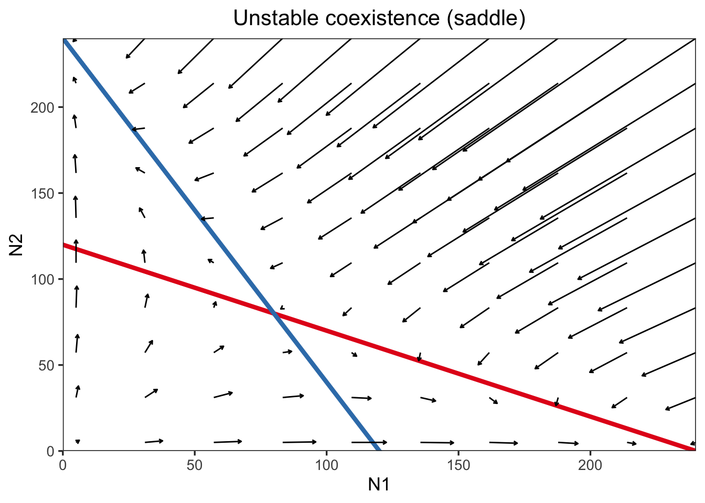

Week 5 - Harvesting and bifurcation
In this lab section, we’re going to analyze the budworm population dynamic model from Ludwig et al., 1978.
Part 1 - Stability of the budworm model
In part 1 we’re going to visulize the stability of the budworm model, by plotting the differential equation. By plotting the the differential equation with different initial, we could see that the number of equilibrium changes.
\[ \dfrac{dN}{dt} = rN(1 - \dfrac{N}{K}) - \dfrac{BN^2}{A^2 + N^2} \]
#### Plotting the functional form for different parameters
#### Parameter setting
r <- 0.055; K <- 10; B <- 0.1; A <- 1
#### Visualize the whole dN/dt
N.vec <- seq(from = 0, to = 10, length = 500)
r.breaks <- c(0.03, 0.05, 0.07)
dat <- outer(X = N.vec, Y = r.breaks,
function(N, r){r * N * (1 - N / K) - (B * N^2 / (A^2 + N^2))})
matplot(x = N.vec, y = dat, type = "l",
xlab = "N", ylab = "dN/dt", col = "blue", lwd = 2, las = 1)
abline(h = 0)
legend("bottomleft", legend = r.breaks, title = "r", col = "blue", lty=1:3, lwd = 2)\[ \dfrac{dN}{dt}[r(1 - \dfrac{N}{K})] = \dfrac{dN}{dt}[\dfrac{BN^2}{A^2 + N^2}] \]
#### Visualize separate components of dN/dt
N.vec <- seq(from = 0, to = 10, length = 500)
r.breaks <- c(0.03, 0.05, 0.07)
dat.growth <- outer(X = N.vec, Y = r.breaks,
function(N, r){r * (1 - N / K)})
matplot(x = N.vec, y = dat.growth, type = "l", ylim = c(0, 0.08), las = 1,
xlab = "N", ylab = "growth / harvest rate", col = "blue", lwd = 2)
curve(B * x / (A^2 + x^2), add = T, col = "red", lwd = 2) # Just curve since its the same line, and note variable notation change
abline(h = 0)
legend("topright", legend = r.breaks, title = "r", col = "blue", lty=1:3, lwd = 2)
#### 2-D bifurcation diagram following analytical solution from Strogatz
#### For nondimensionalized model dx/du = rx(1-x/k) - x^2/(1+x^2)
#### There exist parametric curves for bifurcation points r(x) and k(x)
x.bifur = seq(1.001, 50, by = 0.001)
bifur2D = data.frame(x.bifur = x.bifur,
r.bifur = 2 * x.bifur^3 / ((1 + x.bifur^2)^2),
k.bifur = 2 * x.bifur^3 / (x.bifur^2 - 1))
plot(r.bifur ~ k.bifur, bifur2D, type = "l", lwd = 2, las = 1,
xlim = c(0, 60), ylim = c(0, max(bifur2D$r.bifur) * 1.1),
xlab = "K", ylab = "r", main = "Budworm model bifurcation along r-k space")